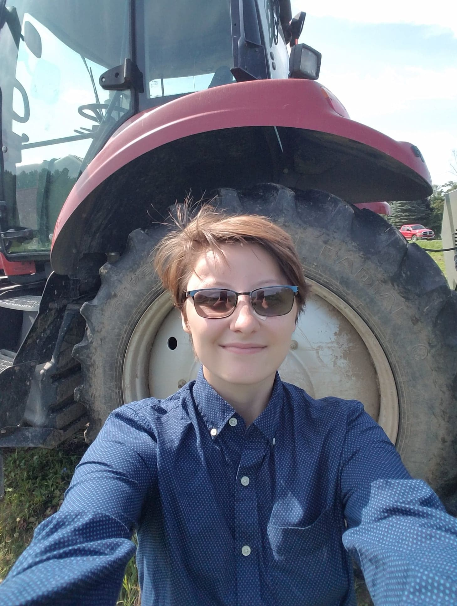
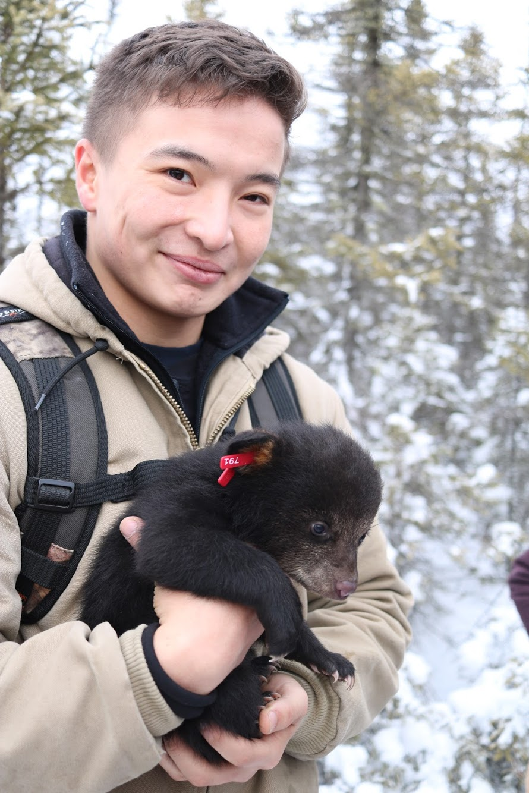

People
Lab members listed alphabetically by last name. Last updated: August 25, 2021.
| Percy Marshall | Master’s Student | pmm005@uark.edu | Percy’s research interests include behavioral ecology, landscape dynamics,and conservation ecology. They are specifically interested in the impacts of invasive waterfowl species on both natural ecosystems and private property. Percy’s research will focus on cataloging distribution and abundance data on Egyptian Geese within Arkansas. They will be working towards understanding the risks that the waterfowl pose to human and ecological interests and helping better prepare for any management tactics that may be needed in the future. |  |
| Caleb Roberts | PI | cr065@uark.edu | Caleb is the leader of the Living Landscapes Lab. He works for the U.S. Geological Survey as an Assistant Unit Leader at the Arkansas Cooperative Fish & Wildlife Research Unit. Caleb’s research interests include ecological resilience, grasslands, landscape ecology, fire, birds, invasive species, plants, community ecology, agroecosystems, complexity theory, and rangelands. Caleb is from western Kentucky, and he enjoys writing, running, reading, cooking, gardening, board games, hiking, and hanging out with his wife, daughter, and cat. |

|
| Mike Shaw | Master’s Student | ms161@uark.edu | Mike’s research interests are in mammal ecology, and he will be studying Eastern Spotted Skunk (Spilogale putorius) in southwest Arkansas. He will be using camera traps to document the presence of Eastern spotted skunk and observe habitat associations. Mike worked in Colorado as a wildlife technician for Colorado Parks and Wildlife and moved to Maryland after his position in Colorado. In Maryland, he worked for county government as a wildlife management specialist. Mike is from eastern Maine, and he enjoys hiking, weightlifting, kayaking, and boardgames. |  |